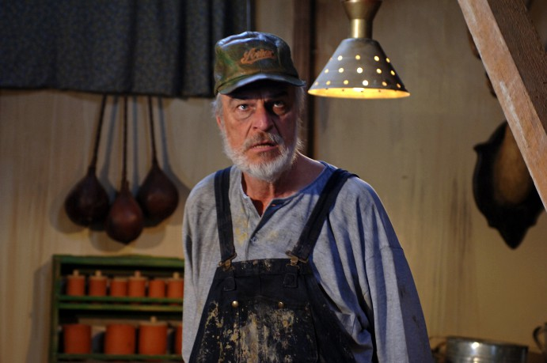

#10265 Versprochen ist versprochen
Alternativ: Jingle All the Way (Englischer Titel)

 IMDB-Wertung: 5.5 / 10
IMDB-Wertung: 5.5 / 10  Metascore: 34
Metascore: 34 
Weihnachten steht vor der Tür und der kleine Jamie Langston wünscht sich nichts Sehnlicheres als die Spielzeugfigur "Turbo-Man". Sein Vater verspricht ihm, dass er diese Figur bekommt. Prommt vergisst er sein "großes" Versprechen und muss wenige Tage vor Heiligabend noch den "Turbo-Man" für seinen Sohn auftreiben. Pech nur, dass diese Figur sehr begehrt ist und somit entbrennt eine gnadenlose Suche nach einem "Turbo-Man"......
Jahr: 1996
Dauer: 89 Minuten
FSK: 6
Land: USA Studio: Twentieth Century FoxTonspuren: DTS - ,
Untertitel: Deutsch,
Auflösung: 1080p (1920x1040) Größe: 6420 MB
Genre: Komödie, Familie, Weihnachten
Regisseur:  Brian Levant
Brian Levant
Drehbuch: Randy Kornfield
Soundtrack: David Newman
Darsteller:
 Arnold Schwarzenegger als Howard Langston
Arnold Schwarzenegger als Howard Langston- Sinbad als Myron Larabee
 Phil Hartman als Ted Maltin
Phil Hartman als Ted Maltin Rita Wilson als Liz Langston
Rita Wilson als Liz Langston- Robert Conrad als Officer Hummell
- Martin Mull als D.J.
- Jake Lloyd als Jamie Langston
 Jim Belushi als Mall Santa
Jim Belushi als Mall Santa Laraine Newman als First Lady
Laraine Newman als First Lady Harvey Korman als President
Harvey Korman als President-  Richard Moll als Dementor
- Daniel Riordan als Turbo Man
 George Fisher als Daring Shopper
George Fisher als Daring Shopper Chris Parnell als Toy Store Sales Clerk
Chris Parnell als Toy Store Sales Clerk Patrick Richwood als Toy Store Co-Worker
Patrick Richwood als Toy Store Co-Worker Kate McGregor-Stewart als Toy Store Customer
Kate McGregor-Stewart als Toy Store Customer- Marcus Toji als Little Boy with Car Remote
 Mo Collins als Mother on Phone
Mo Collins als Mother on Phone- Peter Syvertsen als Father on Phone #2
 John Rothman als Mall Toy Store Manager
John Rothman als Mall Toy Store Manager- Robert Southgate als Mall Toy Store Employee #2
- Sandra K. Horner als Toddler's Angry Mom
 Danny Woodburn als Tony the Elf
Danny Woodburn als Tony the Elf Bruce Bohne als Santa at Warehouse Door
Bruce Bohne als Santa at Warehouse Door- Paul Wight als Huge Santa
 Alan Blumenfeld als Cop at Santa's Warehouse
Alan Blumenfeld als Cop at Santa's Warehouse- Nick LaTour als Counterman
 Peter Breitmayer als Sparky
Peter Breitmayer als Sparky Phil Morris als Gale Force
Phil Morris als Gale Force Marianne Muellerleile als Tow Truck Driver
Marianne Muellerleile als Tow Truck Driver Amy Pietz als Liza Tisch
Amy Pietz als Liza Tisch Walter von Huene als Taxi Driver
Walter von Huene als Taxi Driver- Steve Van Wormer als Turbo Man Float Parade Worker
 Curtis Armstrong als Chain Smoking Booster
Curtis Armstrong als Chain Smoking Booster Jim Meskimen als Police Officer at Parade
Jim Meskimen als Police Officer at Parade- Martin Valinsky als Police Officer Escorting Myron
- Rochelle Vallese als Girl at Parade
- Marc Ambrose als Balloon Wrangler (uncredited)
 Greg Bronson als Toy Store Shopper (uncredited)
Greg Bronson als Toy Store Shopper (uncredited)- Susan Chambers als Frantic Shopper (uncredited)
- Matthew Feeney als Curious Man (uncredited)
- Trish Gates als Store Clerk (uncredited)
- Dan Griffin als Spectator (uncredited)
- John Murray als Video Camera Dad (uncredited)
- Phaedra Neitzel als Santa's Helper (uncredited)
 Yeardley Smith als Woman Who Flirts with Howie (uncredited)
Yeardley Smith als Woman Who Flirts with Howie (uncredited) Verne Troyer als Mini Santa (uncredited)
Verne Troyer als Mini Santa (uncredited)- E.J. De la Pena als Johnny
- Justin Chapman als Billy
- Jeff L. Deist als T.V. Booster / Puppeteer
Datei: X:\1996\Versprochen ist versprochen (1996, FSK6, 1920x1040).mkv seit 27.12.2018
Festplatte: Gemischt-01+Anime
 Es gibt insgesamt 78 Filme in der Gruppe '1996'
Es gibt insgesamt 78 Filme in der Gruppe '1996'